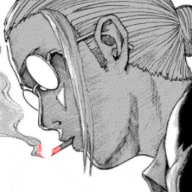

| Descrição Pessoal |
| Idade |
27 |
| Gênero |
Homen |
| Altura |
188 centímetros |
| Peso |
140kg |
| Cor de cabelo |
Cinza |
Taro Sakamoto/Habildades
- Nível Geral de Habilidade
- Mesmo entre a Ordem , Sakamoto é conhecido por ser o assassino mais forte de todos os tempos, possuindo imensa habilidade em combate e também se destacando em todos os aspectos da matança. Aparentemente, ninguém consegue igualar sua habilidade no enredo atual. Até o momento, ele só foi superado no tiro certeiro por Heisuke, um assassino que se destaca nesse aspecto. Mesmo em sua forma rechonchuda, Sakamoto é uma força a ser reconhecida. Vovó Miya observa que o atual Sakamoto tem apenas 30% de suas habilidades físicas em comparação com seu auge.
- Força Aprimorada
- Sakamoto é bastante poderoso mesmo depois de se aposentar e seu nível de condicionamento físico diminui drasticamente como resultado. Sakamoto possui uma força física incrível, sendo capaz de decapitar pessoas facilmente e chutar Shin em sua loja através de várias prateleiras. Sakamoto estabilizou a parte superior em colapso da Torre de Tóquio puxando-a com um cabo de aço, parando um ônibus em alta velocidade com uma placa de rua, segurando uma pessoa no alto com uma mão e destruindo o chakram de Son-Hee com apenas uma frigideira. Durante o Lab Arc , Sakamoto cortou várias cordas que o prendiam usando uma folha de cupom e destruiu um esqueleto mecanizado de dinossauro em combate corpo a corpo. Sakamoto é forte o suficiente para jogar sua esposa sobre os pilares de uma ponte suspensa. Mesmo em seu estado atual, a força de Sakamoto permitiu-lhe lutar e derrotar Kanaguri, um poderoso ex-membro da Ordem.
- Durabilidade Aprimorada
-
Sakamoto possui durabilidade fenomenal, sendo capaz de resistir a um chute de Bacho , que o fez voar contra um prédio adjacente com força suficiente para sair de uma cratera. Sakamoto também sobreviveu ileso a quedas extremamente altas, resistiu a inúmeras explosões à queima-roupa de Boiled e saiu ileso da bomba suicida de Uda , que aniquilou a maior parte do andar de um prédio de escritórios. A gordura de Sakamoto também lhe concede um grau de proteção, provavelmente permitindo-lhe sobreviver aos fios de Apart , que eram fortes o suficiente para romper múltiplas vigas de aço que sustentavam a Torre de Tóquio. Durante uma viagem ao balneário, Sakamoto relaxou em um banho de gelo de 1°C (chamando o banho de morno) e desfrutou de uma sauna quente o suficiente para causar combustão espontânea. Ele sentou-se e resistiu a uma cachoeira com pressão de água de 10 toneladas, e repetiu o ciclo banho de gelo-sauna-cachoeira várias vezes, além de resistir a um jato de água poderoso o suficiente para lançar Shin pela sala.
- Resistência à hipnose: Sakamoto não foi afetado pela hipnose do Club Jam .
- Resistência à telepatia: Durante a primeira batalha de Sakamoto e Shin, Shin não conseguiu ler a mente do veterano assassino.
- Velocidade e reflexos aprimorados
- Sakamoto se move tão rápido que a maioria dos oponentes não consegue ver ou reagir a ele. Ele foi capaz de se esquivar do " Tofu Scramble Attack " de Son-Hee e Bacho e acertar o último antes que pudesse reagir, desmontar e cortar as armas de vários oponentes em um piscar de olhos antes de incapacitá-los, e ser capaz de alcançar um ônibus em alta velocidade a pé. Ele foi rápido o suficiente para desviar os tiros de atirador disparados por Heisuke , embora isso o ferisse levemente. Durante sua batalha com Kashima em um trem em movimento, Sakamoto foi jogado em um trem que ia na direção oposta, pelo qual ele correu por toda a extensão antes de explodir e pousar de volta no trem de Kashima.
Durante um cruzeiro fracassado, Sakamoto jogou Aoi para o alto e derrotou todos os assassinos do navio de cruzeiro antes que ela voltasse para seus braços. Sakamoto correu pelas laterais das paredes, pegou água fervente no ar com um copo de ramen instantâneo e girou cabides com rapidez suficiente para desviar as balas. Sakamoto bloqueou uma bala disparada contra sua cabeça a menos de um centímetro de distância usando um garfo e evitou o fogo de metralhadora de uma torre. Durante um jogo de Old Maid, Sakamoto foi rápido o suficiente para roubar uma carta da mão de alguém e colocá-la de volta sem que a pessoa percebesse.

Voltar